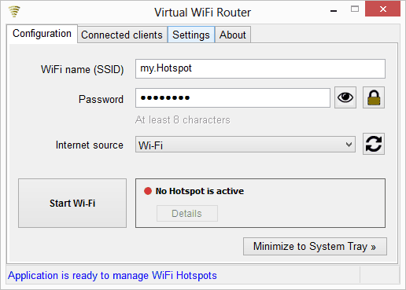

Virtual WiFi
Convert your computer into a virtual WiFi router.
Using Virtual WiFi you will be able to transform any computer which runs Windows 10, 8.1, 8, 7, Vista or XP into a WiFi router. The program is simple and very easy to use, and it offers many useful features, and many others are planned to appear in the future.
Supported languages: Romanian, English, French, Polish, Vietnamese.
There are two types of wireless networks (hotspots) that can be created with Virtual WiFi:
1. Ad-Hoc (local) hotspots - which can be used to share files/services from one computer to other computers;
2. Internet sharing hotspots - used to distribute the available Internet connection of the computer (Ethernet, 3G/4G/5G modem, other WiFi access point) to multiple Wi-Fi devices such as computers, smartphones, tablets, smartTVs and others.

- 
-

-

-

(In progress...)
Timer and countdown timer for Windows.
Did you ever needed to schedule tasks, set alarm or use a timer on your computer? I'm currently working on a program for the Windows OS which allows you to set alarms with triggers such as Windows shutdown, run a program, open a site in the browser, show a message, play a sound and others. Also, you will be able start a timer to count how much time has passed since was started at a certain moment in the future.
This program is meant to be very useful for any Windows user, having a friendly interface and be as stable as possible (for the first stable version). It will allow the start of multiple alarms and stopwatches, which can be managed very easily.
Compatibility: Windows 10, 8.1, 8, 7, Vista, XP.
Languages: English, Romanian.
Release date: end of 2017.
Read more